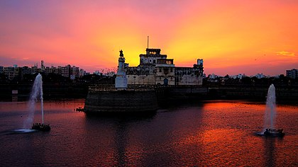

Welcome To Jamnagar...

Nawanagar City
Nawanagar was founded by Jam Rawal in 1540 as the capital of the eponymous princely state.[4] Jamnagar, historically known as Nawanagar (the new town), was one of the most important and the largest princely states of the Jadejas in the Saurashtra region.vIt was a thirteen-gun salute state.
According to historical records, Bahadur Shah, Sultan of Gujarat bestowed upon Jam Lakhaji twelve villages in recognition of his role in the siege of Pawagadh. Shortly after he took possession of the villages, Jam Lakhaji was killed by his cousins, Tamachi Deda and Jam Hamir Jadeja. His son, Jam Rawal, murdered his father's killers and became ruler of Kutch. The State of Kutch was semi-independent from the Gujarat Sultanate.Hamirji's sons, Khengarji and Sahibji, served the Sultan of Gujarat. During a hunt, the brothers saved the Sultan from being killed by a lion. As a reward for their valour, the Sultan sent an army with them to regain their kingdom. Jam Rawal prepared for battle after hearing that the two princes were returning to Kutch with the imperial army.Goddess Ashapuraji, the supreme deity of the Jadeja Clan
Jamnagar is a city located on the western coast of India in the state of Gujarat of Saurashtra region. It is the administrative headquarters of the Jamnagar district and the fifth largest city in Gujarat. The city lies just to the south of the Gulf of Kutch, some 337 kilometres (209 mi) west of the state capital, Gandhinagar.India's largest private company, Reliance Industries, has established the world's largest Oil Refining and Petrochemicals Complex in Jamnagar district.
Famous Places in Jamnagar City
- Khijadia BIRD Sanctuary
- Kambhalia Gate
- Bhidbhanjan Temple
- Darbar Gate Places
- Lakhota Talav
- Lakhota Museum
Jamnagar City Famous Food Item
- Gathia
- Jamnagari Bhajiya
- Dal Pakwan
- Gughra
- Patra
- Khandvi
© Copyright Reserved
Go To Main Page